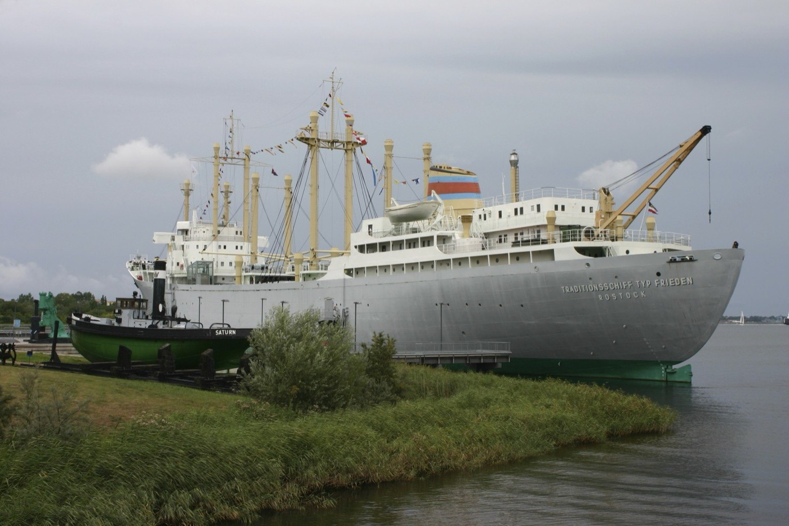

projekte
17 Projekte von 1994 bis heute – zum Aufklappen auf einen Eintrag tippen.

-
10/2008 – heute
J2EE basiertes Portalsystem auf Basis Liferay / IBM WebSphere
Konzeption und Realisierung einer auf J2EE basierenden Portallösung als Integrationsplattform für eine Versicherung / Bank / Bausparkasse.
aufgaben
- Machbarkeitsstudie und Realisierung mehrerer Prototypen zum Technologievergleich
- Mitarbeit am Fachkonzept, Ausarbeitung und Auswahl von technischen Realisierungsvorschlägen.
- Konzeptionelle Arbeit und Realisierung von technischen Funktionalitäten.
technologien
-
07/2007 – 09/2008
Konzeption und Realisierung der Beratungslösung
Implementierung einer Beratungslösung für den Aussendienst einer Versicherung / Bank / Bausparkasse.
aufgaben
- Konzeption und Realisierung der Beratungslösung.
technologien
-
09/2006 – 06/2007
Konzeption und Implementierung eines ServiceBrokers
Konzeption und Implementierung eines ServiceBrokers (ServiceBus) zur Anbindung bestehender Businesslogik. Ziel ist die Öffnung eines zuvor geschlossenen IT-Systems, die Bereitstellung der Funktionalität in Form von Diensten und die Schaffung einer serviceorientierten Architektur (SOA) unter besonderer Berücksichtigung sicherheitsrelevanter Rahmenbedingungen (WS-Security).
aufgaben
- Konzeptionelle Arbeit und Realisierung von Prototypen basierend auf den erstellten Konzepten.
- Konzeption, Implementierung und Einführung eines Message-Brokers und des zugehörigen XML-Kommunikationsformates
technologien
-
04/2005 – 08/2006
Modernisierung eines Hostsystems
Modernisierung eines bestehenden Hostsystems in einer Versicherung/Bank/Bausparkasse durch Komponentenbildung, Modularisierung, Schichtentrennung sowie Erarbeitung und Einführung der begleitenden Verfahren, Konzepte und Aspekte der Qualitätssicherung. Gegenprüfung der erstellten Konzepte an Hand von Prototypen. Ziel ist die Öffnung des Hostsystems, die Bereitstellung der Hostfunktionalität in Form von Diensten und mittelfristig die Schaffung einer serviceorientierten Architektur (SOA) auf dem Host.
aufgaben
- Konzeptionelle Arbeit und Realisierung von Prototypen basierend auf den erstellten Konzepten.
- Verifizierung erstellter Komponenten bezüglich Einsatz in Portal-Umgebungen
- Auswahl und Einführung eines Message-Brokers und des zugehörigen XML-Kommunikationsformates
- Produktverifizierung zur PDF-Generierung und Briefschreibung in Hostumgebungen
technologien
-
04/2004 – 03/2005
Integration von Hostlogik in eine Java/CORBA Umgebung
Integration von Hostlogik mittels GUI-fizierung bestehender 3270-Dialoge in eine Java/CORBA Umgebung für eine Hypothekenbank
aufgaben
- Konzeptionelle Arbeit und Realisierung von Prototypen basierend auf den ausgewählten Frameworks und Umgebungen.
- Umstellung vorhandener Hostlogik und PHANTOM Logik auf das Produkt NetPHANTOM
- Erweiterung der Hostlogik mittels Java und REXX
- Integration der umgestellten Hostlogik in ein bestehendes Java / Swing Framework
technologien
-
09/2002 – 03/2004
Design einer servicezentrierten Architektur
Design einer servicezentrierten Konzernarchitektur für einen Versicherungs-, und Bausparkonzern. (Schwerpunkt lag auf der Präsentations-Schicht und der EAI-Schicht)
aufgaben
- Realisierung von Web-Anwendungen auf Struts und JSF (Java Server Faces) Basis für interne Betriebsabläufe
- Technische Leitung der Evaluation und Auswahl einer Basis für ein Anwendungsframework unter Nutzung von OpenSource Komponenten
- Konzeptionelle Arbeit und Realisierung von Prototypen basierend auf dem ausgewählten/realisierten Framework.
- Verifizierung erstellter Komponenten hinsichtlich Einsatz in CRM Portal-Umgebungen
- Arbeiten zur Konzeption und produktivem Einsatz des IBM WebSphere Portal Servers V 4.2 als Mitarbeiterportal
- Erstellung von Konzepten zur Einbindung eines Mitarbeiterportals in eine Unternehmensarchitektur
- Installation IBM Portal Server 4.1.x, 4.2 und 5.0
- Einbindung IBM DB/2 und IBM Secure Way Directory Server (LDAP) an Stelle des "Portal Member Subsystems"
- Entwicklung, Test und Deployment von Portlets mit IBM WSAD und IBM Portal Toolkit
- Erstellung von „Cooperative Portlets“ mittels "Click To Action Technologie" (C2A)
- Erstellung von "Struts Portlets" und Migration bestehender Struts Anwendungen zu "Struts Portlets"
- Einsatz von Portlet Listeners, Portlet Event Handling und Portlet Messaging
- Erstellung eigener Portlet Services (Erweiterungen des Portlet Containers)
- Konzeption und Prototyping zum Thema Security und Zusammenarbeit von J2EE und Back End Services (EAI)
- Anbindung bestehender Unternehmensdienste über WebServices, EJB, CORBA, JMS
- Anbindung CORBA Clients an EJB’s mit IBM WebSphere
- CORBA Services als WebService zur Verfügung stellen
technologien
-
11/2001 – 09/2002
Erarbeitung einer neuen Konzernarchitektur
Analyse einer bestehenden Anwendungslandschaft und Untersuchungen im Hinblick auf die Erstellung einer neuen Konzernarchitektur für einen Versicherungs-, und Bausparkonzern.
aufgaben
- Planung, Koordination und technische Leitung der Realisierung eines Anwendungsframeworks
- Coaching der Mitarbeiter in technischen Umfeld von WebServices, Struts, Java, JSP, Servlet, EJB, Java-Beans, IBM VisualAge 4.x, IBM WebSphere Application Developer, IBM WebSphere 4.x
- Konzeptionelle Arbeit und Realisierung von Prototypen basierend auf dem realisierten Framework.
technologien
-
03/2001 – 09/2001
Architekturuntersuchung bzgl. EJB in J2EE Umgebungen
Architekturuntersuchungen im Hinblick auf die Verwendbarkeit von EJB's an einer auf J2EE basierenden Portallösung für eine deutschen Börse sowie für ein Steuerberatungsunternehmen.
aufgaben
- Untersuchung und Realisierung von Lastverteilung, Securitymechanismen, Ausfallsicherheit von IBM WebSphere
- Untersuchungen und Aufzeigen von Lösungsmöglichkeiten für Performanceengpässe.
technologien
-
01/2001 – 09/2001
J2EE basiertes Portalsystem für eine deutsche Börse
Konzeption und Realisierung einer auf J2EE basierenden Portallösung für ein Kurs- und Handelssystem einer deutschen Börse.
aufgaben
- Technische Projektleitung (6 Leute), Designverantwortung und Leitung der gesamten Entwicklungsarbeiten
- Erarbeitung des Systemumfeldes, Erarbeitung und Realisierung eines patternbasierten Frameworks
- Coaching neuer Mitarbeiter in technischen Umfeld von XML, HTML, Java, JSP, Servlet, EJB, Java-Beans, DB/2, Oracle, InterBase, Apache WebServer, Tomcat ServletEngine, IBM VisualAge 3.5, IBM WebSphere 3.5, JBoss 2.1
- Konzeptionelle Arbeit und Realisierung von Funktionalitäten, basierend auf dem geschaffenen Framework.
- Technische Projektleitung und Koordinierung aller technischen Fragestellungen zwischen Kunde und Auftragnehmer.
- Untersuchung und Realisierung von Lastverteilung mittels LoadBalancing für Apache/Tomcat Umgebungen vs. IBM WebSphere
- Mitarbeit am Fachkonzept, Ausarbeitung und Auswahl von technischen Realisierungsvorschlägen für ein Kurs- und Handelssystem einer deutschen Börse.
- Machbarkeitsstudie und Realisierung mehrerer Prototypen zum Technologievergleich
technologien
-
10/2000 – 01/2001
Verfahren zur Authorisierung/Authentifizierung
Konzeption und Realisierung eines Verfahrens zur Authorisierung / Authentifizierung für eine Bausparkasse.
aufgaben
- Konzeptionelle Erarbeitung und Realisierung eines Verfahrens zur Kundenauthorisierung und –authentifizierung für ein Online Auskunftssystem im technischen Umfeld von HTML, EJB, Java, Java-Beans, JSP, Servlet, DB/2, LDAP.
- Realisierungsgegenstand war der Abgleich von Host-Kundendaten mit PC-LDAP-Systemen und die Integration der LDAP-Systeme in die Internet-Systemlandschaft.
- Konzeptionelle Erarbeitung und Realisierung eines Verfahrens zur Softwareverteilung mittels Java
technologien
-
10/1999 – 10/2000
Konzeption eines J2EE Frameworks
Konzeption und Realisierung eines innovativen Frameworks auf J2EE Basis als Grundlage für die Erstellung und den Betrieb fachlicher Komponenten für eine Portallösung.
aufgaben
- Technische Projektleitung (8 Leute), Designverantwortung und Leitung der gesamten Entwicklungsarbeiten
- Erarbeitung des Systemumfeldes, Erarbeitung und Realisierung eines patternbasierten Frameworks
- Coaching neuer Mitarbeiter im technischen Umfeld von HTML, Java, JSP, Servlets, Java-Beans, XML, DB/2, Oracle, IBM WebSphere 3.02, IBM VisualAge 3.02
- Konzeptionelle Arbeit und Realisierung von Funktionalitäten, basierend auf dem geschaffenen Framework.
- Technische Projektleitung und Koordinierung aller technischen Fragestellungen zwischen Kunde und Auftragnehmer
- Mitarbeit am Fachkonzept, Ausarbeitung und Auswahl von technischen Realisierungsvorschlägen für den Internetauftritt (mit Community-Schwerpunkt) eines Steuerberatungsunternehmens.
- Machbarkeitsstudie und Realisierung mehrerer Prototypen zum Technologievergleich
technologien
-
03/1999 – 10/1999
Konzeption einer Sicherheitsarchitektur
Unterstützung bei der Konzeption und Realisierung einer Sicherheitsarchitektur und einer ersten fachlichen Anwendung zur Kreditbearbeitung und Kundenbeauskunftung für eine Bausparkasse
aufgaben
- Entwicklung einer Java C/S Anwendung, um im DB/2 Umfeld befindliche Informationen zu Kundenstämmen und -transaktionen im Internet berechtigten Beratern zugänglich zu machen.
- Analyse, Erstellung und Implementierung eines Sicherheitskonzeptes, zur Abwehr von Angriffen auf den Internetdatenverkehr.
- Erarbeitung und Implementierung eines Konzeptes zum Aufbau geschützter Internetverbindungen mittels CORBA-Interceptoren und Einführung einer symmetrisch/asymmetrischen Verschlüsselung des Datenverkehrs.
- Erarbeitung einer Studie zur Beschleunigung der Startzeit des Systems mittels Smart-Update-Mechanismen der beteiligten Internet-Browser.
- Erstellung und Realisierung eines Konzeptes zur Interoperabilität von unterschiedlichen ORB's.
technologien
-
02/1999 – 03/1999
CORBA Bankapplikation
Prototyp einer CORBA-basierenden Bankapplikation
aufgaben
- Entwicklung einer Applikation, die beispielhafte Dienste einer Bank zur Verfügung stellt. An dieser Applikation wurden Mechanismen für CORBA basierende verteilte Systeme demonstriert.
- Untersuchung zur Interoperabilität von CORBA ORB's.
technologien
-
10/1998 – 01/1999
Java Prototypen zur REXX Ablösung
Entwicklung mehrerer Java Prototypen zur Plattformportierung bestehender Batch und REXX Anwendung in ein Java Umfeld für eine Bausparkasse.
aufgaben
- Coach für Java, VisualAge und C/S-Technologie
- Unterstützung des Kunden bei der Realisierung des fachlichen Projektes
technologien
-
01/1998 – 09/1998
Client/Server Bestandsmanagement-System
Unterstützung bei der Erstellung einer Client/Server Anwendung für die Verwaltung von DV-Beständen, einschließlich eines User-Helpdesk Systems.
aufgaben
- Betreuung der Übergabe der entstandenen Architekturkomponenten an „Kompetenz-Center“ des Kunden und Unterstützung bei der Weiterentwicklung
- Testaktivitäten und Qualitätssicherung im Produktumfeld.
- Second Level Support und Implementierung von Kundenanforderungen im genannten Umfeld .
technologien
-
03/1997 – 12/1997
Kundenauskunftssystem einer Bausparkasse
Betreuung einer Bausparkasse beim Übergang zur objektorientierten Entwicklung von Client/Server Anwendungen, Konzeption und Realisierung eines Kundenauskunftssystems
aufgaben
- Unterstützung der Projektleitung des Kunden bei Realisierung fachlicher Anforderungen
- Entwicklung eines Frontends zur zeitabhängigen Steuerung von Datenbankaktivitäten mit dem Ziel der Performanceverbesserung des Gesamtsystems.
- Modellierung und Implementierung, sowie produktive Einführung des graphischen Frontends zur Verfolgung laufender Serveraktivitäten.
- Modellierung und Implementierung von Serverprozessen für die asynchrone Bearbeitung der Datenbankanfragen der Beraterarbeitsplätze. Die Datenbankzugriffe wurden mit dem CLI (call level interface) sowie “embedded SQL” realisiert.
- Verantwortung für Design und technische QS in der Anwendungsentwicklung (5 Leute)
- Entwicklung von Komponenten zur Automatisierung von Beratertätigkeiten.
technologien
-
07/1994 – 03/1997
Client/Server Bestandsmanagement-System
Erstellung einer Client/Server Anwendung für die Verwaltung von DV-Beständen, einschließlich eines User-Helpdesk Systems.
aufgaben
- Implementierung eines Frontends zur frei definierbaren Steuerung von Serverprozessen.
- Erstellung eines Klassen- und Objektmodells, Implementierung des graphischen Frontends zur Erfassung, Verwaltung und Kontrolle vordefinierter Serverprozesse.
- Erstellung von Klassen- und Objektmodellen, Implementierung von selbsttätig agierenden Serverprozessen (Zugriff der Serverprozesse auf Datenbankressourcen erfolgte über ODBC-Interfaces, die Interaktion der Serverprozesse mit verschiedenen E-Mail Systemen (ccMail, Lotus Notes und Microsoft Mail) erfolgte über die MAPI und VIM API’s der entsprechenden Hersteller).
- OOA/OOD, Konzeption, Datenmodellierung, Implementierung und Qualitätssicherung für die Teilkomponente “Problemmanagement - User-Helpdesk”
- Testaktivitäten und Qualitätssicherung im oben genannten Produktumfeld.
- Second Level Support und Implementierung von Kundenanforderungen im genannten Umfeld.
technologien